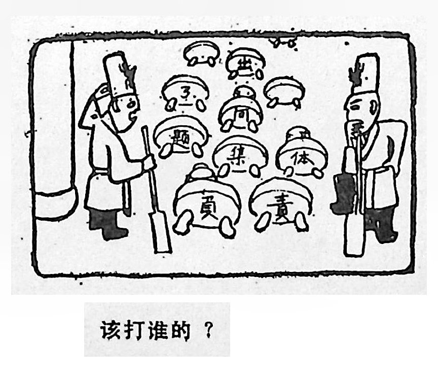

佚名 《人事》1987年第2期（总第17期），封三
该打谁的？
Whose Should We Beat?
- Text in the drawing
- 出了问题 集体负责
When problems arise, the collective takes responsibility - Description
- Two yamen runners with paddles stand over a crowd of offenders, each cap bearing one character of the slogan “when problems arise, the collective takes responsibility.” Which one are they supposed to beat?
- Note
- 集体负责, collective responsibility, was the standard way leading groups avoided individual accountability.
- Artist
- Unattributed 佚名
- Published in
- 《人事》1987年第2期（总第17期）, inside back cover
- Themes
- Passing the buck

Cite
Unattributed, “该打谁的？” [Whose Should We Beat?], Renshi (Personnel) 《人事》, 1987, no. 2, inside back cover.